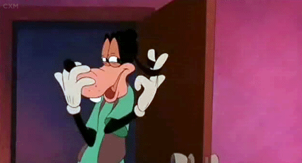

My Love.
To make sure you know how special you are to me, I made you something that you can return to when you need the reminder (well... besides the numourous Marco Polos, texts, snaps, Facebook messages, and practically hourly Instagram memes).
So...
When You Need A Laugh.
When You're Curious How You Make Me Feel.

Basically like this.
All.
The.
Time.
When You Need A Little Motivation.
When Things Feel Like They're Going Bad.
When You Need A Conversation Starter.
- What's something you always wanted to do as a child but never got to do it?
- If you were in a witness protection program, what would be your new name and where would you go?
- What is the strangest thing you’ve ever eaten?
- What famous artist, dead or alive, would you want to paint your portrait?
- What's the dumbest thing you've ever cried about?
- If you could rid the world of one disease what would it be?
- What board game do you hate the most?
- If you could get away with a crime, would you? If yes, what would it be?
- Who was your first celebrity crush?
- What's the worst thing you ever did as a child and what was your punishment?
- What is one thing you refuse to share?
- What are two things you would do if you woke up to find yourself completely invisible?
- Describe the worst haircut you’ve ever had.
- What is your biggest regret?
- Have you ever pooped your pants? (not including when you were a baby)
- If you could have one superpower, what would it be and why?
- If you could be on the cover of any magazine which one would you choose?
- What song would you sing for your American Idol audition?
- What's the worst job you've ever had?
- What is the funniest movie you have ever seen?
- If you could trade lives with anyone for a day who would it be and why?
- Which Disney princess do you find to be the most attractive?
- What country would you never want to visit?
- What scene from a non-horror movie scared you as a child?
- What kind of phone was your first cell phone?
- What's your worst pet peeve?
- If you were about to be executed what five foods would have as your last meal?
- Which would be harder for you to give up: coffee or alcohol?
- On a scale from 1-10 what's the highest level of pain you've ever been in?
- If you could start a collection of one kind of item, what would it be?
- Who is the most famous person you have ever met?
- How many slices of pizza are you capable of eating in one sitting?
- What fashion trend do you wish would come back?
- What fashion trend do you wish would go away?
- You're in prison with a life sentence, what was your crime?
- If you could bring one fictional character to life, who would it be?
- If you inherited or won a million dollars, what's the very first thing you would do with the money?
- What two languages would you like to be fluent in?
- Would you rather be smart or happy if you could only have one?
- What would you do if you were the lone survivor of a plane crash?
- What is your favorite sport in the Winter Olympics?
- What one toy do you wish never existed?
- What is your favorite smell?
- Do you believe in Bigfoot?
- What is one thing women do that grosses you out? And men?
- What's your favorite viral YouTube video?
- What is the last book you read?
- What was your favorite color or Crayola crayon growing up?
- What word do you hope people use to describe you after you die?
- If it were possible, would you live on the moon?
- If you could break any world record which one would it be?
- Who would you hate to see naked?
- If you could got back in time 1,000 years, what year would you visit?
- Would you let me slap you for a hundred dollars?
- What famous historical figure would like to fight?
- What's the weirdest dream you've ever had?
- If you could master one musical instrument, what would it be?
- What's your least favorite fast food restaurant?
- If someone wrote a biography about you, what do you think the title should be?
- Have you ever been drunk in public?
- Would you dress in drag for $100?
- What do you think phones will be like in 10 years?
- What bad habit do you have that you know you need to break, but don't really want to?
- If you were president for the day, what one thing would you change about the country?
- How would you describe yourself in three words?
- If money were no object, where in the world would you choose to live?
- If you had to eat one thing from McDonald's, every meal for a week straight, what would you chose?
- If you could deliver a speech to the entire world, what would you say?
- Have you ever chased down an ice cream truck as an adult?
- What is the weirdest scar you have and how did you get it?
- If you had to choose to live without one of your five senses, which one would you give up?
- Have you ever saved someone's life?
- If you found out you were the direct descendant of a king or queen, would you go find them and claim your throne or keep your life as it was?
- Has anyone ever saved your life?
- What skills do you posses that could help you survive the zombie apocalypse?
- If you inherited a single room off-the-grid cabin in the woods, would you be excited or disappointed?
- If you could choose your age forever, what age would you choose and why?
- Have you ever been scared enough to wet your pants?
- If you could go back in time and change history, what would you change?
- Who is your favorite cartoon character?
- If you could kill off any character from a current television show, who would it be?
- What was your first CD and when did you get it?
- What is something you are currently obsessed with?
- If a theme song played every time you entered a room, what would it be?
- What insect do you wish would completely go extinct?
- What is your guilty pleasure?
- If you could live forever, would you?
- Would you rather be a judge or a lawyer?
- If you had had to read an entire encyclopedia, which letter would you choose?
- Who is your favorite stand-up comedian?
- If you had to spend the rest of your life as a tree, what kind of tree would you be?
- If you were in the circus what kind of performer would you be? (Clown, tight-rope walker, etc.)
- What phobias have you overcome in your lifetime?
- Have you thrown up in a car?
- If you could go on a cross country road trip with famous person, dead or alive, who would it be?
- Who would play you in a movie?
As You Plan For The Next Five Years.
When You Need Some Tiny Home Inspo.
When You Need A(nother) Laugh.
...But seriously these guys are hilarious. Check out their full channel.